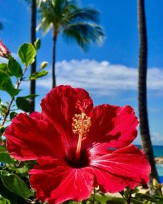
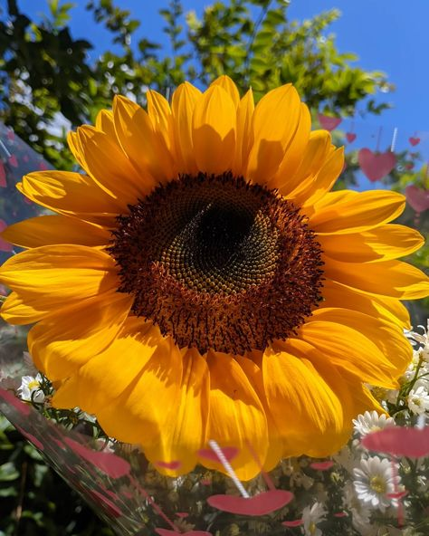

Chá de hibisco:
O chá de hibisco (Hibiscus sabdariffa L.) é um queridinho das dietas para emagrecer. E a planta em si às
vezes é vista como uma erva medicinal, que teria propriedades antioxidantes e ajudaria na perda de peso e no
controle da pressão e do colesterol, entre outros benefícios.

Girassol ponto turístico
Goiás é o maior produtor de girassol do país, sendo responsável por 68% de toda produção brasileira, segundo
a Companhia Nacional de Abastecimento (Conab). Considerado por muitos símbolo de alegria, as flores chamam
atenção pelo amarelo vibrante e fazem das plantações local perfeito para sessões de foto. Mas a beleza
exuberante não é o que tem feito produtores goianos escolherem a planta para cultivo

Tulipas em Holanda
Campos ficam repletos de cores, formas e tamanhos de tulipas entre março e maio. Um parque próximo a
Amsterdã, com 7 milhões de flores e exposições sobre o tema, é uma das grandes atrações turísticas desta
época